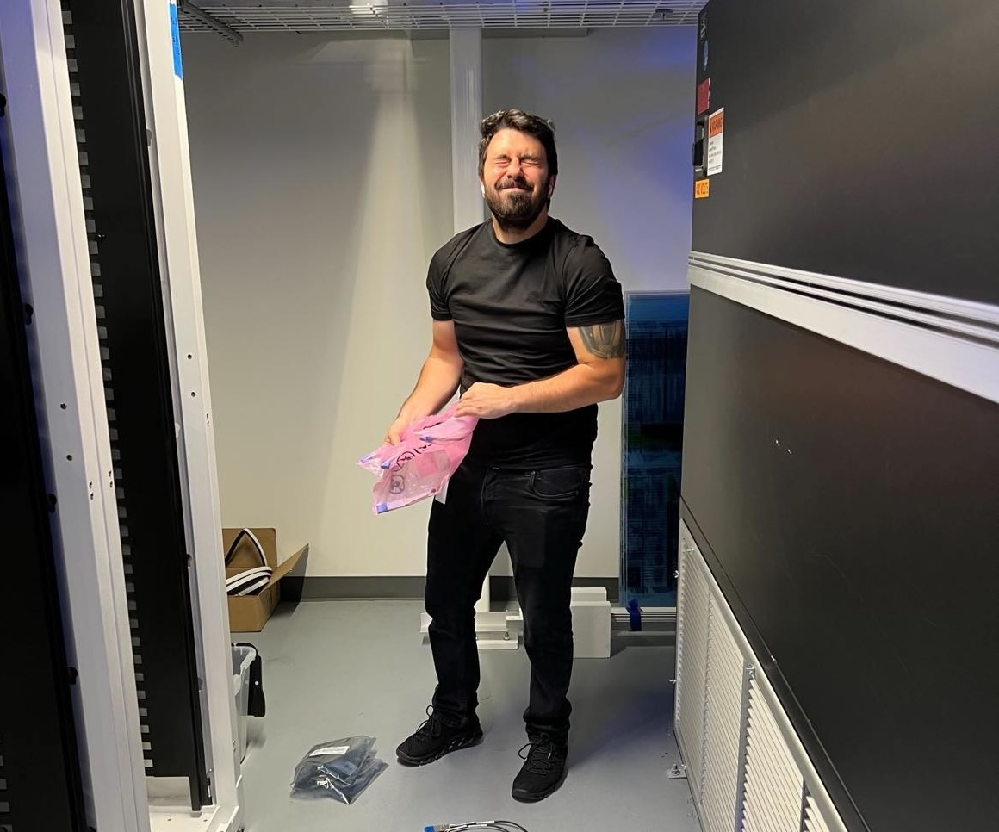
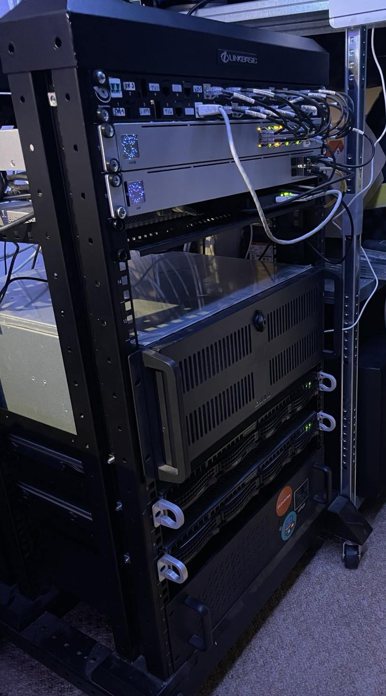

Hi, I'm Előd Szabó-Sebők.
A Network Engineer
from Hungary

What Does a Network Engineer Do?
Well..:D
The primary role of a network engineer is to design, install, maintain and support communication networks within an organisation or between organisations.
As a Network engineer, I need to maintain high levels of operation of communication networks in order to provide maximum performance and
availability for their users, such as staff, clients, customers and suppliers.

Not just a job?
Homelab stuff
Why do I need a homelab? I don't. It's not something mandatory for everyone to have a homelab setup. But having a homelab setup has its advantages.
If you are new to Linux servers, it provides you a playground for learning and breaking things, it lets you work and experiment with projects that you cannot try on the job itself.
It allows you to learn and do things on your own. With a little patience, you could create projects that would otherwise cost a lot if you go to professional services. For example, a CCTV setup.
A homelab is also essential if you are privacy cautious and don't trust cloud services to back up their data.

What I'm doing in my free time?
Probably on the road
Nearly 10 years ago, I took my fist bike. Since then when I get a chance, I’m on the road, exploring mid Europe countries.
About me
My timeline
-
01/05/2020 – CURRENT - Senior Network Engineer - Cloudera
Establish the networking environment for a cloud company by designing system configuration(technical drawings in Lucidchart), directing system installation and defining, documenting and enforcing system standards(Cisco, Meraki, Palo Alto, VMWare Hypervisor). Design and implement new solutions and improve resilience of the current environment (Palo Alto FW and VPN solution). Maximise network performance by monitoring performance(check_mk, Solarwinds), troubleshooting network problems and outages, scheduling upgrades and collaborating with network architects, cloud network engineers on network optimisation.(direct links to AWS, Azure, GCP) Upgrade data network equipment to the latest stable firmware releases(DCNM Nexus fabric). Maintaining network services: DNS/DHCP(Bluecat/Infoblox), AD, Log servers, SMTP, Radius, etc. Design Wifi coverage(Ekahau), and configuring Cisco WLCs/Meraki. Providing on-call support for network stability on weekly basis..
-
01/08/2019 – 30/04/2020 - 2nd level IT operation - IBM
procedures and policies,· monitoring, alarm handling, resolution of outages,· execute scheduled and ad-hoc maintenance activities on the managed systems, · participation in service-takeovers per requirements, · communication and administration connected to operation, · know and verify the existence of systems and procedures required to fulfill operational requirements, generate proposals for these if needed, · solve the service requests assigned by other support team/group, · provide customer service for 2nd level operations,· assure customer satisfaction, · inform Manager on Duty, Shiftleader, line manager about urgent and important topics respectively per requirements, · precise handover of the shift, · compliance of the business processes in the operations, · complete administration tools timely and precisely..
-
01/10/2017 – 31/07/2019 - Network Design Engineer - British Telecom
Develop and recommend design scope for more complex and/or new network design activities. Set up network models for design testing. Produce standardised designs in a range of areas including core and customer specific network design. Provide design support and information downstreaming on their feature and/or component design to more senior network designers or testing team, systems team. Collaborate with more senior network engineers to resolve implementation issues, with suppliers and other designers. Solve problems typically specific to components across the network platform and/or customer solution.
-
01/09/2015 – 30/09/2017 - Noc engineer - EAD Telecom
Monitor the performance and capacity of computer systems using a variety of tools. Looking for hardware, software alerts or malfunctions. When an issue is identified, working to determine the cause of the problem.Troubleshooting the problems, coordinating with vendors, customer contacts, or other IT teams
Thank you for visiting my website!
Follow me on social media.